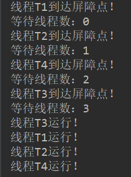
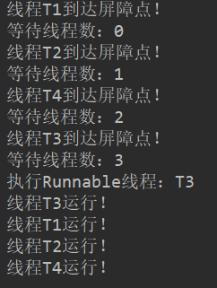

CyclicBarrier介绍
CyclicBarrier俗称屏障，使用它可以完成，让一组线程到达一个屏障（同步点）时被阻塞，直到最后一个线程到达屏障时，屏障才会开门，所有被屏障拦截的线程才会继续干活。
我们来看下CyclicBarrier的具体使用：
1 | public class CyclicBarrierDemo { |
上面这个示例程序只有在四个线程都运行了cyclicBarrier.await()后，每个线程才能继续往下执行。
运行结果：

CyclicBarrier还有一个可传入一个Runnable的构造函数：
1 | public CyclicBarrier(int parties, Runnable barrierAction) |
其作用是，当最后一个线程到达屏障时，由最后一个线程执行这个Runnable；
Demo：
1 | public class CyclicBarrierDemo { |
结果：

CyclicBarrier源码分析
CyclicBarrier借助ReentrantLock实现，CyclicBarrier有两个构造函数，一个内部类Generation，Generation内部类中就一个成员变量broken，CyclicBarrier通过Generation标志线程是否被打断，同时一个线程组一个Generation对象。
Generation对象源码：
1 | private static class Generation { |
await()源码：
1 | public int await() throws InterruptedException, BrokenBarrierException { |
await()重载方法源码：
1 | public int await(long timeout, TimeUnit unit) |
总结
CyclicBarrier工具类的实现主要靠对ReentrantLock的封装实现，使用了一个内部类来标识线程是否被中断；其核心方法是在同步代码里使用ReentrantLock的await()方法和awaitNanos()方法实现。
本文首发于我在万达摆地摊's blog，转载请注明来源